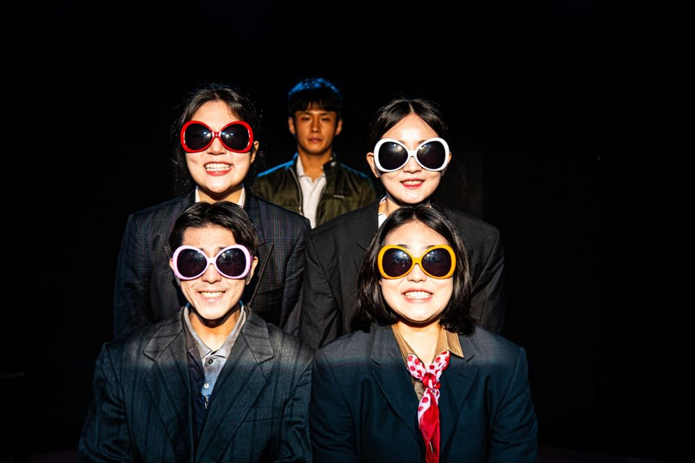

4월에 일어난 한국 현대사의 사회적 트라우마를 다룬다. 4.16 세월호 참사 생존자 가족이 머무는 정거장에 1948년 제주 4.3, 1960년 4.19혁명, 1980년 4월 사북항쟁의 피해자들이 하나둘 모여든다. 역사라는 버스를 타지 못하고 흔적처럼 남겨진 사람들을 조용히 바라보며 애도하는 작품. 정유진의 첫 연출작.
2022.4.22–5.1 / 예술공간 혜화
작: 이하슬
연출: 정유진
조명: 김소현
의상: 김경희
오퍼레이터: 최지현, 정연종
촬영: 한문희
기획·홍보: 스탭서울
그래픽디자인: 보통현상
출연: 박수빈, 박유진, 이승훈, 이주형, 이지원
목소리 출연: 남유정
2022.4.20 관람 후기 (네이버 블로그)
이전: 입정하다 | 다음: 누구와 무엇
아카이브로 돌아가기 | 아무 작품이나
발행일 2026.11.13